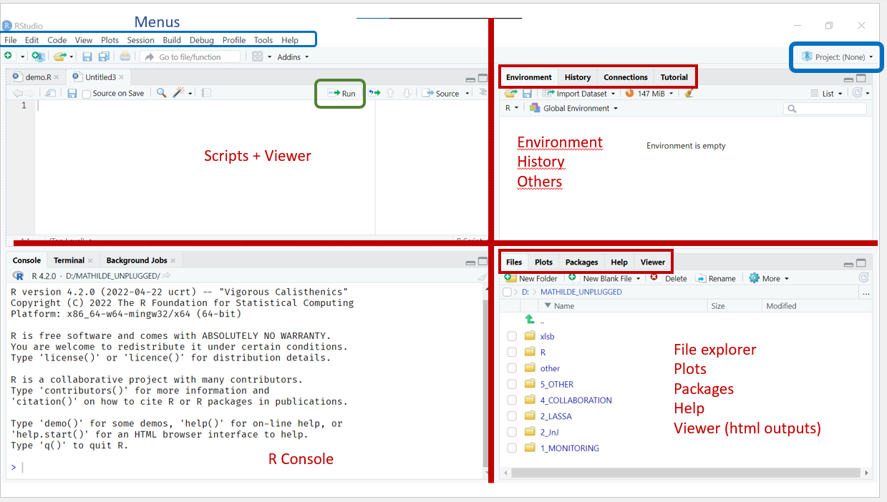

5 + 90
6 * 171
189 / 36.6
92^3
(12 + 9)^4 / 1000Introduction à R
Core
R Basics
Data Types
Vos premiers pas dans R. Apprenez à vous familiariser avec Rstudio et rencontrez quelques objets R courants.
Objectifs
- Se familiariser avec RStudio
- Apprendre à travailler avec la console
- Créer et exécuter un script
- Créer des objets R de base, y compris des vecteurs et des cadres de données
Format de l’exercice
Ces exercices se présentent sous la forme d’un didacticiel à rythme libre contenant de courtes explications des concepts clés, des exemples et des exercices à suivre. Le cours utilise une approche d’apprentissage par la pratique, et bien que cette première session commence par une exploration de l’interface de RStudio, les sessions suivantes se concentreront fortement sur l’écriture de votre propre code.
Les instructions pour les exercices seront données dans les formats suivants :
Il s’agit d’un bloc d’action générale. Vous le verrez généralement au début d’une session avec des instructions sur la configuration de cette leçon.
Exemple: Ouvrez un nouveau script vierge et nommez-le mon_premier_script.R.
Il s’agit d’un bloc de code Il s’agit d’un exercice de codage dans lequel vous écrirez votre propre code.
Exemple: Créez un objet appelé region qui contient la valeur "Mandoul".
Il s’agit d’un bloc d’observation Il contient des instructions sur un objet que vous devez observer ou étudier.
Exemple: Inspecter l’interface de RStudio.
Au cours de ces exercices, vous rencontrerez peut-être des erreurs, qui se produisent lorsque R n’est pas en mesure d’exécuter une commande. Cela peut se produire pour de nombreuses raisons : vous avez peut-être mal orthographié le nom d’un objet, demandé à R de rechercher un fichier qui n’existe pas ou fourni le mauvais type de données à une fonction. Lorsqu’une erreur se produit, R s’arrêter les calculs en cours et vous donne un message expliquant ce qui s’est passé. Il est tout à fait normal d’avoir des erreurs et cela arrive à tous les programmeurs qu’ils soient novices ou experts. À l’instar d’un langage naturel, vous vous améliorerez dans l’utilisation de R au fur et à mesure que vous vous entraînerez et que vous travaillerez sur vos erreurs.
RStudio et R
R est un langage de programmation fonctionnel qui peut être utilisé pour nettoyer et manipuler des données, effectuer des analyses (en particulier des analyses statistiques), visualiser des résultats, et bien plus encore.
RStudio est un logiciel qui fournit une interface conviviale pour R (également appelé IDE, pour Integrated Development Environment). Bien que l’utilisation d’une interface graphique ne soit pas obligatoire, elle est fortement recommandée pour les débutants.
Premiers pas avec RStudio
Commençons par le commencement !
Ouvrez RStudio en utilisant le menu de démarrage ou le raccourci du bureau ; si RStudio est déjà ouvert, veuillez le fermer et l’ouvrir à nouveau.
Vous devriez voir une interface qui ressemble à ceci :

Inspecter l’interface RStudio.
Vous disposerez de trois ou quatre panneaux, dont :
Coin supérieur droit
En haut à droite se trouve un panneau avec plusieurs onglets. La plupart d’entre eux dépassent le cadre de ce cours, mais nous utiliserons les deux onglets suivants dans le cadre de ce cours :
Environnement. Liste des objets enregistrés par l’utilisateur dans la session en cours. Comme vous venez de démarrer une nouvelle session, votre environnement doit être vide.
Historique. Un enregistrement de toutes les commandes que vous avez exécutées au cours de la session actuelle.
Note
Vous pouvez considérer une session R comme vous le feriez en démarrant un ordinateur. Lorsqu’une session démarre, tout est vierge et prêt pour le calcul, de la même manière qu’il n’y a aucun programme ouvert lorsque vous allumez votre ordinateur pour la première fois. En général, nous vous encourageons à arrêter et à démarrer vos sessions R régulièrement. l’éteindre et le rallumer pour corriger certains de vos bogues.
Coin inférieur droit
En bas à droite se trouve un autre panneau à onglets multiples, comprenant les éléments suivants
- Fichiers. Un explorateur de fichiers pour le répertoire de travail, qui est l’emplacement du dossier dans lequel R travaille actuellement.
- Tracés. Un emplacement où RStudio affichera statique Cet onglet doit être vide pour le moment.
- Paquets. Liste de tous les paquets R installés sur votre ordinateur. Les paquets sont des collections de fonctions qui permettent d’étendre les fonctionnalités de R. Nous les aborderons plus en détail dans la section prochaine leçon.
- Aide. Un endroit pour lire les pages d’aide et la documentation pour les fonctions et les paquets.
- Visualisateur. Un emplacement où RStudio affichera des sorties html telles que des tableaux, des widgets interactifs ou même des tableaux de bord complets.
Côté gauche
- À gauche (ou en bas à gauche si vous avez quatre panneaux), vous devriez voir le bouton console où R est exécuté.
- En haut à gauche (si vous avez quatre panneaux) se trouve n’importe quelle fenêtre ouverte. ouverts.
Dans les deux sections suivantes, nous parlerons plus en détail de la console et des scripts.
La console
La console est où R lui-même est exécuté.
Chaque fois que vous ouvrez une nouvelle session, R commence par imprimer quelques informations sur votre configuration, telles que le numéro de version de R. En dessous de ces informations, vous trouverez une ligne contenant le numéro de version de R. En dessous de ces informations, il devrait y avoir une ligne contenant le code > et un curseur clignotant. Pour exécuter une commande dans R, il vous suffit de la taper après ceci > et d’appuyer sur Enter. R traitera alors votre code et imprimera le résultat (s’il y en a un). Un nouveau > s’affichera alors, prête pour la commande suivante.
Important
Si la dernière ligne affichée dans la console commence par un + au lieu d’un > cela signifie que la console n’est pas prête à recevoir une nouvelle commande, soit parce qu’elle est encore en train de traiter une commande précédente, soit parce qu’elle a reçu un bout de code incomplet. Si, à un moment donné, vous souhaitez annuler une commande en cours ou incomplète, appuyez sur la touche Esc.
Exécutez les commandes suivantes dans la console, une ligne à la fois, et observez les résultats.
Exécutez maintenant la commande suivante. Notez que la dernière ligne de commande ) est manquante, ce qui rend la commande incomplète. Que se passe-t-il lorsque vous faites cela ?
3 / (2 + 97Vous avez peut-être remarqué dans les exemples ci-dessus que notre code comporte beaucoup d’espaces entre les caractères. Ce n’est pas un hasard. La meilleure pratique consiste à inclure des espaces autour de la plupart des opérateurs, tels que +, -, *, /, <, >, = et <-. Non seulement ces espaces facilitent la lecture et la compréhension de votre code, mais dans certains cas (rares), ils peuvent même être nécessaires pour éviter des erreurs. Cela dit, il faut savoir qu’il y a un petit nombre d’opérateurs qui devraient pas ne doivent pas être entourés d’espaces, tels que ^, . et :.
1+29+4.8/3*3 # BAD
1 + 29 + 4.8 / 3 * 3 # GOOD
1 ^ 2 # BAD
1^2 # GOODNous pouvons également gérer fonctions dans la console. Nous aborderons les fonctions plus en détail plus loin dans cette leçon mais en attendant, sachez que l’idée des fonctions dans R est très similaire à celle d’Excel, où vous êtes sans doute familier avec des fonctions telles que SUM ou MEAN.
Exécutez les commandes suivantes dans la console (une ligne à la fois).
# Find the minimum value
min(5, 10)
min(1, 8, 56, 0.3)
# Find the maximum value
max(568, 258, 314)Scripts
Les scripts sont des fichiers texte qui contiennent un série de commandes pour un langage de programmation particulier. L’extension du fichier indique le langage dans lequel les commandes ont été écrites. .R. Les scripts nous permettent de créer du code qui peut être réutilisé, partagé et même automatisé.
Écrire son premier scénario

Pour créer un nouveau script, suivez le menu File > New File > R Script. Vous pouvez également cliquer sur la petite icône verte + juste en dessous de l’icône File ou utiliser le raccourci clavier CTRL+SHIFT+N. Ce nouveau et non sauvegardé apparaîtra sous la forme d’un document vierge dans le panneau supérieur gauche.
Pour enregistrer votre script, utilisez le menu File > Save As ou le raccourci clavier CTRL+S.
Créer et enregistrer un nouveau script appelé discovery.R. N’oubliez pas d’inclure l’élément .R dans le script. Pour l’instant, vous pouvez l’enregistrer sur votre bureau ou à tout autre endroit approprié, mais nous parlerons plus en détail de l’organisation de vos scripts dans la section prochaine session.
Exécuter du code à partir d’un script
Pour exécuter du code à partir d’un script, placez simplement votre curseur sur la ligne que vous souhaitez exécuter (ou sélectionnez plusieurs lignes) et effectuez l’une des opérations suivantes :
- Cliquez sur le bouton
Runen haut à droite de la fenêtre de script - Utilisez le raccourci
CTRL+Enter(le curseur passera ensuite à la ligne suivante) - Utiliser le raccourci
ALT+Enter(le curseur reste ensuite sur la ligne en cours)
Copiez le code que vous avez exécuté dans les exercices précédents dans votre script et exécutez-le en utilisant chacune des méthodes ci-dessus.
A partir de maintenant, vous écrirez votre code dans votre script et l’exécuterez à partir de là, sauf indication contraire dans les instructions.
Commentaires
En R, tout texte précédé d’un # (jusqu’à la fin d’une ligne) est appelé un commentaire. R ne considère pas les commentaires comme du code et les ignore lorsque vous exécutez vos scripts. Les commentaires sont donc un excellent moyen de documenter votre code.
# This is a comment
2 + 3 # This is also a commentIl est utile pour l’avenir, pour vous et pour les autres, de commencer vos scripts par quelques lignes commentées fournissant des informations sur le fichier.
#### IMPORT & PREPARE DATA ####
# Author : Mathilde Mousset
# Creation Date : 23/11/2024
# Last Update : 30/11/2024
# Description : Import and clean measles surveillance data from MoissalaAjoutez quelques commentaires au début de votre script pour le décrire.
Les commentaires sont également un moyen pratique de diviser les scripts plus longs en sections thématiques, telles que “Importation de données”, “Analyse”, “Visualisation”, etc. Par exemple :
# NAME OF SECTION 1 -----------------------------------------------
# NAME OF SECTION 2 ----------------------------------------------- Utilisez les commentaires pour créer des sections dans votre script qui correspondent aux sections principales de ce tutoriel.
Enfin, les commentaires nous permettent d’écrire des notes utiles pour nos collègues (et nos futurs collègues) qui peuvent les aider à comprendre le code et la raison pour laquelle nous l’avons écrit de cette manière. L’orientation générale est de se concentrer sur les commentaires qui expliquent le “pourquoi” plutôt que le “quoi”. En effet, le “quoi” d’un code bien écrit devrait être relativement explicite.
Ce commentaire, par exemple, est tout à fait superflu :
1 + 3 # Code to add one to threeEn comparaison, voici quelques cas d’utilisation qui mériteraient d’être commentés :
- Vous définissez une constante, par exemple une valeur seuil de séroprévalence. Vous pouvez ajouter un commentaire indiquant la référence d’où provient la valeur.
- Votre code contient une valeur ou un nom de fichier qui doit être mis à jour chaque semaine. Vous devez l’indiquer dans un commentaire afin que toute personne utilisant le code en soit informée.
- Vous utilisez une commande ou un paquetage rare que votre collègue ne connaît peut-être pas ou qu’il trouve contre-intuitif. Vous pouvez utiliser un commentaire pour expliquer le raisonnement qui sous-tend cette décision.
Ceci étant dit, vous apprenez, et les scripts que vous écrivez pendant ce cours sont vos notes, alors n’hésitez pas à utiliser autant de commentaires (du type “quoi” et “pourquoi”) que vous le souhaitez. Vous écrirez naturellement moins de commentaires à l’avenir, lorsque certaines choses qui vous semblent étrangères aujourd’hui deviendront naturelles.
Tip
Vous pouvez commenter une ligne sélectionnée avec le raccourci CTRL+SHIFT+C.
Vous pouvez ajouter une section de premier niveau avec CTRL+SHIFT+R.
Ajoutez quelques commentaires pour décrire le code que vous avez écrit jusqu’à présent dans votre script.
Types de données
R dispose de plusieurs types de données. Ceux que nous verrons le plus souvent dans ce cours sont les suivants :
- numérique
- chaîne de caractères (texte)
- booléen (VRAI / FAUX)
- date
- facteur
Numérique
Le type numérique comprend à la fois entiers et les doubles (nombres comprenant une décimale) et peuvent être créés en écrivant simplement la valeur “nue” dans votre script ou votre console.
Chaînes de caractères
Cordes sont la version R du texte et peuvent être créées en entourant le texte de guillemets simples ou doubles, par exemple "district" ou 'cases' (les guillemets doubles sont généralement considérés comme la meilleure pratique).
Comparez la sortie dans la console pour les commandes suivantes :
28 # numeric
"28" # text
28 + "28" # produces an errorLa dernière commande ci-dessus donnera lieu à une erreur car nous ne pouvons pas effectuer d’opérations arithmétiques combinant du texte et des nombres.
Important
R est sensible à la casse, ce qui signifie que la chaîne "ABC" n’est pas identique à "abc".
Si vous souhaitez créer une chaîne de caractères contenant des guillemets, la meilleure pratique consiste à s’échapper le caractère en le faisant précéder d’un “\”, c’est-à-dire : échapper"She said \"Hello\" then left" ou 'it\'s a beautiful day'. De manière équivalente, si vous avez utilisé une double citation pour créer la chaîne, vous pouvez utiliser librement des guillemets simples à l’intérieur de celle-ci (par ex : "it's a beautiful day") et vice versa (c’est-à-dire : 'She said "Hello" then left').
Booléen (logique)
Le type booléen (ou “logique”) stocke des valeurs vrai/faux et est créé en écrivant soit TRUE ou FALSE sans guillemets.
En interne, R pense à TRUE et FALSE comme une version spéciale de 1 et 0 respectivement, et les valeurs booléennes peuvent être facilement traduites en ces équivalents numériques pour les opérations arithmétiques.
Note
Vous trouverez peut-être des personnes qui utilisent T ou F mais cela est déconseillé car T et F peuvent également être utilisés comme noms d’objets ou de variables. TRUE et FALSE sont cependant protégés dans R, ce qui signifie qu’ils ne peuvent pas être réaffectés à une autre valeur.
Déterminer le type d’un objet
Il existe plusieurs fonctions permettant de déterminer le type d’un objet (souvent appelé le classe de l’objet en R).
Tapez les commandes suivantes dans votre script et exécutez-les :
# Get the Type of an Object
class(28)
class("Mandoul")
# Test the Type of an Object
is.numeric(28)
is.numeric("Mandoul")
is.character("Mandoul")
is.numeric(TRUE)
is.character(TRUE)
is.logical(FALSE)Création d’un objet
En R, presque tout est un objet y compris les fonctions, les valeurs scalaires et d’autres structures de données plus complexes. Avant de présenter ces structures, faisons un détour important pour discuter de la manière dont les objets sont enregistrés dans votre environnement.
Souvent, nous souhaitons réutiliser les mêmes valeurs ou données tout au long d’un script et il est donc très utile de les stocker sous forme d’objets dans notre environnement. Pour ce faire, nous utilisons la classe opérateur d’affectation, <-.
Regardez le panneau d’environnement en haut à droite, vérifiez qu’il est vide, puis tapez la commande suivante dans votre script et exécutez-la pour enregistrer une variable appelée cases dans votre environnement.
cases <- 28Regardez à nouveau l’environnement. Est-il toujours vide ?
Si vous souhaitez accéder à la valeur de votre nouvel objet, cases il vous suffit de exécuter son nom.
cases[1] 28
Note
La raison pour laquelle nous avons besoin de mettre les chaînes de caractères entre guillemets est en fait pour permettre à R de différencier les chaînes de caractères ("cases" et les noms d’objets cases).
Une fois créés, les objets peuvent être utilisés dans d’autres commandes :
cases + 5[1] 33Dans votre script, créez un objet appelé region qui contient la valeur "Mandoul". Le voyez-vous dans votre environnement ?
Tip
N’oubliez pas que nous devons toujours entourer <- par des espaces afin d’améliorer la lisibilité et d’éviter les erreurs.
x<-3 # BAD
x <- 3 # GOODMise à jour d’un objet
Nous souhaitons souvent mettre à jour la valeur stockée dans un objet. Pour ce faire, il suffit d’assigner une nouvelle valeur avec la même syntaxe que celle utilisée lors de la création de l’objet :
cases <- 32Mettre à jour la valeur de region en "Moyen Chari".
Noms d’objets
Pour nommer vos objets, il existe quelques règles (relativement) strictes :
- Ne pas commencer par un chiffre
- Ne pas utiliser d’espaces (utiliser un
_à la place) - N’utilisez pas de valeurs protégées (comme
TRUEetFALSE) ou des noms de fonctions (commemean) - N’utilisez pas de majuscules
Au-delà de ces règles strictes, il existe également des bonnes pratiques plus subjectives et des styles personnels. En règle générale, les noms doivent être courts et descriptifs :
a <- 19 # BAD (not informative)
age_du_patient_a_l_admission <- 19 # BAD (too long)
age <- 19 # GOODDonner à vos objets des noms clairs et informatifs contribue à rendre votre code lisible, ce qui le rend facile à comprendre pour les autres sans avoir besoin de consulter le dictionnaire de données toutes les deux secondes.
Structures de données
Jusqu’à présent, nous nous sommes contentés d’étudier des objets simples qui stockent des valeurs individuelles. Nous allons maintenant nous intéresser à des structures plus complexes qui peuvent stocker des ensembles entiers de données.
Vecteurs
Il est possible de rassembler plusieurs valeurs (telles que des valeurs numériques ou des chaînes de caractères) en un seul objet, appelé vecteur.
Techniquement, il existe plusieurs types de vecteurs, par exemple :
- Vecteurs simples (ou vecteurs atomiques) ne peuvent contenir qu’un seul type de valeurs. Par exemple, un tableau numérique
2, 4, 6ou un tableau de chaînes de caractères"Mandoul", "Moyen Chari". - Vecteurs récursifs (généralement appelés listes) sont beaucoup plus complexes et peuvent contenir plusieurs dimensions et types de données. Nous ne les aborderons pas dans cette leçon.
Ce cours n’entrera pas dans les détails des concepts plus abstraits qui sous-tendent ces structures et se concentrera uniquement sur celles que vous rencontrerez le plus souvent dans votre travail quotidien.
Vecteurs simples
Les vecteurs simples peuvent contenir une ou plusieurs valeurs d’un seul type de données Ils ont donc deux propriétés essentielles : la longueur et type. Dans le cadre de ce cours, nous utiliserons indifféremment les termes “vecteur simple” et “vecteur” (comme c’est généralement le cas dans la communauté R).
Techniquement, vous avez déjà créé votre premier vecteur simple lorsque vous avez construit cases et region. Il s’agissait simplement de vecteurs avec un longueur d’un. Pour créer un vecteur avec plus d’une valeur, nous utiliserons la fonction c() ( [mnémonique]{.hovertip bs-toggle=‘tooltip’ bs-title=’ is the first letter of “concatenate”’}) :c
cases <- c(2, 5, 8, 0, 4)Mise à jour cases avec les valeurs ci-dessus et mettre à jour region pour créer un vecteur de chaînes de caractères contenant les valeurs suivantes : Mandoul, Moyen-Chari, Logone Oriental, Tibesti et Logone Occidental : Mandoul, Moyen-Chari, Logone Oriental, Tibesti et Logone Occidental.
Nous pouvons maintenant utiliser des fonctions sur les objets que nous avons créés :
mean(cases) # calculate the mean value of the cases vector[1] 3.8toupper(region) # convert all the values in region to upper case[1] "MANDOUL" "MOYEN-CHARI" "LOGONE ORIENTAL"
[4] "TIBESTI" "LOGONE OCCIDENTAL"Utilisons quelques fonctions ! Essayez d’écrire un code qui fait ce qui suit :
Calculer la somme de
casesen utilisant la fonctionsum()Convertir le texte en
regionen minuscules à l’aide de la fonctiontolower():::
Accès aux valeurs d’un vecteur
Il est possible d’accéder à la valeur d’un vecteur en utilisant des crochets contenant l’indice (position) de la valeur souhaitée, c’est-à-dire : [3] ou [189].
cases[2] # 2nd value of cases[1] 5cases[10] # 10th value of cases[1] NAOups il n’existe pas ! Nous reviendrons sur ce que cette NA signifie dans le Valeurs manquantes.
Nous pouvons également accéder à un gamme de valeurs, comme nous pourrions le faire dans Excel. Pour créer une plage, nous utilisons la fonction : pour séparer les indices minimum et maximum souhaités :
cases[2:4] # 2nd to 4th values of cases[1] 5 8 0Obtenir la 3ème valeur de region.
Ecrire du code pour accéder aux valeurs “Mandoul” et “Moyen-Chari” dans le vecteur region.
Trames de données
Trames de données sont des str uctures structures / tableaux en 2D avec des lignes et des colonnes. Il s’agit d’une structure très similaire à celle d’un “tableau” dans Excel. En tant qu’épidémiologistes, ce type de structure de données est peut-être le plus utile et vous l’utiliserez probablement au quotidien, pour stocker les données de la liste de diffusion par exemple.
Création d’un cadre de données
Nous pouvons créer un cadre de données à l’aide de la fonction data.frame():
data.frame(col1 = c(1, 4, 2, 9),
col2 = c("a bit of text", "some more text", "hello", "epidemiologists!")) col1 col2
1 1 a bit of text
2 4 some more text
3 2 hello
4 9 epidemiologists!Voir comment col1 a été créé à partir d’un tableau numérique, et col2 à partir d’un tableau de chaînes de caractères. Ici, nous avons choisi les noms des colonnes (col1 et col2), ce qui est normal, mais vous pouvez exécuter le code sans pour voir comment R gère les noms par défaut.
Dans votre script, créez un cadre de données appelé data_cases qui contient cases dans une colonne et region dans l’autre.
Exploration d’un cadre de données
data_cases devrait maintenant apparaître dans votre environnement. Vous pouvez cliquer sur le cercle bleu avec un triangle blanc pour obtenir des informations supplémentaires, ou cliquer sur son nom pour ouvrir l’objet dans le même volet que les scripts pour le visualiser.

Il existe plusieurs fonctions pratiques permettant d’explorer une base de données :
Exécutez les commandes suivantes et essayez de déterminer le type d’informations qu’elles renvoient.
str(data_cases) # STRucture of the object
dim(data_cases) # DIMension of the object
nrow(data_cases) # Number of ROWs
ncol(data_cases) # Number of COLumns
names(data_cases) # column NAMESPratiquons un peu plus ! R est livré avec plusieurs ensembles de données intégrés auxquels il est possible d’accéder directement, dont un appelé iris. C’est pratique aujourd’hui car nous n’avons pas encore appris à importer des données dans R (ne vous inquiétez pas, nous travaillerons sur les données de listes de lignes à partir de la deuxième session).
Nous pouvons voir les premières lignes de cette base de données à l’aide de la fonction head():
head(iris) Sepal.Length Sepal.Width Petal.Length Petal.Width Species
1 5.1 3.5 1.4 0.2 setosa
2 4.9 3.0 1.4 0.2 setosa
3 4.7 3.2 1.3 0.2 setosa
4 4.6 3.1 1.5 0.2 setosa
5 5.0 3.6 1.4 0.2 setosa
6 5.4 3.9 1.7 0.4 setosaCombien de lignes et de colonnes y a-t-il dans iris? Quels sont les noms de ses colonnes ?
Accéder aux données d’un cadre de données
En R, il existe plusieurs méthodes pour accéder aux lignes et/ou aux colonnes d’un cadre de données. Dans cette session d’introduction, nous nous concentrerons sur la méthode [ ] syntaxe.
Nous utilisons les crochets pour accéder à des valeurs individuelles ou à des plages de valeurs dans notre cadre de données. Pour ce faire, nous devons donner à R un numéro de ligne (ou un intervalle de lignes) et un numéro/nom de colonne (ou un intervalle de colonnes), en utilisant la syntaxe suivante [row, column].
data_cases[1, 2] # the value of row one, column 2[1] "Mandoul"data_cases[1, "region"] # first value in the region column[1] "Mandoul"Si nous voulons accéder à toutes les lignes (ou colonnes), nous pouvons simplement laisser un espace à la place du numéro/nom :
data_cases[1, ] # values of all columns in row one cases region
1 2 Mandouldata_cases[2:4, ] # values of all columns for rows 2 through 4 cases region
2 5 Sud Kivu
3 8 Kasai oriental
4 0 Kasaidata_cases[ , "region"] # values of all rows for the region column[1] "Mandoul" "Sud Kivu" "Kasai oriental" "Kasai"
[5] "Haut Katanga" Nous pouvons même sélectionner plusieurs indices non consécutifs en utilisant un tableau numérique :
data_cases[c(1, 3), ] # lines 1 and 3 (all columns) cases region
1 2 Mandoul
3 8 Kasai orientalSoyez prudent, car l’option type de sortie renvoyé lors de l’extraction de données d’un cadre de données peut parfois dépendre du style d’indexation utilisé :
str(data_cases[1 , ]) # returns a data frame'data.frame': 1 obs. of 2 variables:
$ cases : num 2
$ region: chr "Mandoul"str(data_cases[ , 1]) # returns a simple vector num [1:5] 2 5 8 0 4Autre syntaxe pour extraire les différentes colonnes d’une base de données :
data_cases[2] # returns the second column (as a data frame) region
1 Mandoul
2 Sud Kivu
3 Kasai oriental
4 Kasai
5 Haut Katangadata_cases["region"] # returns the region column (as a data frame) region
1 Mandoul
2 Sud Kivu
3 Kasai oriental
4 Kasai
5 Haut KatangaNotez que ces commandes renvoient des cadres de données à une seule colonne.
Écrire du code pour :
extraire la troisième valeur de la
regionde votre cadre de donnéesextraire les deuxième et troisième valeurs de la colonne
casescolonnecalculer la somme des
casescolonne de votre cadre de données:::
Valeurs manquantes
En tant qu’épidémiologistes, nous travaillons constamment avec des données manquantes. Dans R, les valeurs manquantes sont codées à l’aide d’une valeur spéciale : NA (signifiant Not Available). NA est quelque peu unique dans R, car il n’a pas en soi d’objectif fixe. type il prend plutôt le type des valeurs qui l’entourent. Par exemple, un NA dans une colonne numérique prendra alors le type numérique. Nous aborderons la notion de données manquantes de manière plus approfondie dans les sessions ultérieures du cours.
Les fonctions
Les fonctions sont des objets qui contiennent des commandes (au lieu de valeurs) qui sont exécutées chaque fois que la fonction est appelée. Vous connaissez sans doute les fonctions d’Excel telles que SUM ou MEAN et l’idée des fonctions dans R est exactement la même.
La plupart des fonctions nécessitent une certaine forme d’entrée, comme un ensemble de données ou un paramètre. Ces entrées sont appelées arguments et sont normalement nommés. Par exemple, lorsque nous avons exécuté sum(cases) nous avons fourni le vecteur cases comme premier (et seul) argument de la fonction sum().
Souvent, une fonction combinera les deux éléments suivants nécessaire et facultatif facultatifs. Le premier argument d’une fonction est presque toujours obligatoire et est généralement un ensemble de données. En tant qu’argument obligatoire et plutôt évident, la plupart des gens omettent son nom lorsqu’ils appellent une fonction, c’est-à-dire qu’ils écrivent mean(cases) au lieu de mean(x = cases). Les arguments facultatifs, en revanche, sont généralement ajoutés en utilisant leur nom, c’est-à-dire : : mean(x = cases, na.rm = TRUE).
Les arguments facultatifs ont généralement des valeurs par défaut et nous ne les incluons que lorsque nous voulons modifier leurs valeurs par défaut (et donc modifier le comportement par défaut de la fonction). Par exemple, la fonction na.rm de la fonction mean() détermine si R ignorera les valeurs manquantes lors du calcul d’une moyenne. L’état par défaut de la fonction na.rm est FALSE Ainsi, par défaut, la moyenne calculée sur des données avec des valeurs manquantes renverra toujours NA comme résultat :
mean(c(1, 3, NA))[1] NACeci est vrai pour de nombreuses opérations arithmétiques dans R. Si nous voulons que R calcule la moyenne sur n’importe quelles données est disponibles (et ignorer les valeurs manquantes), nous devons explicitement paramétrer na.rm = TRUE:
mean(c(1, 3, NA), na.rm = TRUE)[1] 2
Tip
Notez que les arguments sont séparés par des virgules. Ces virgules doivent toujours être suivies d’un espace et chaque fois qu’un argument nommé est utilisé, l’attribut = doit être entouré d’espaces :
mean(cases,na.rm=TRUE) # BAD
mean(cases, na.rm = TRUE) # GOODAu fur et à mesure que vous travaillez avec des fonctions de plus en plus complexes, il se peut que vous commenciez à avoir des beaucoup d’arguments. Pour des raisons de lisibilité, il est généralement recommandé de séparer chaque argument sur sa propre ligne :
mean(cases,
na.rm = TRUE) Que se passe-t-il si nous plaçons les arguments dans le mauvais ordre ? Si vous avez indiqué le nom des arguments dans votre commande, la fonction fonctionnera toujours exactement comme prévu. Ceci étant dit, cela rendrait votre code plus difficile à lire et nous vous encourageons à vous en tenir à un ordre standard en plaçant les arguments obligatoires comme les données en premier.
# technically functional but hard to read:
mean(na.rm = TRUE,
x = cases)
# better:
mean(cases,
na.rm = TRUE)Bien entendu, si vous ne respectez pas l’ordre des arguments et des n’a pas n’a pas inclus leurs noms, votre code ne fonctionnera pas comme prévu, voire produira une erreur :
mean(TRUE, cases) # not what you expectC’est fait !
C’est tout pour cette session, félicitations pour vos premiers pas avec R et RStudio !